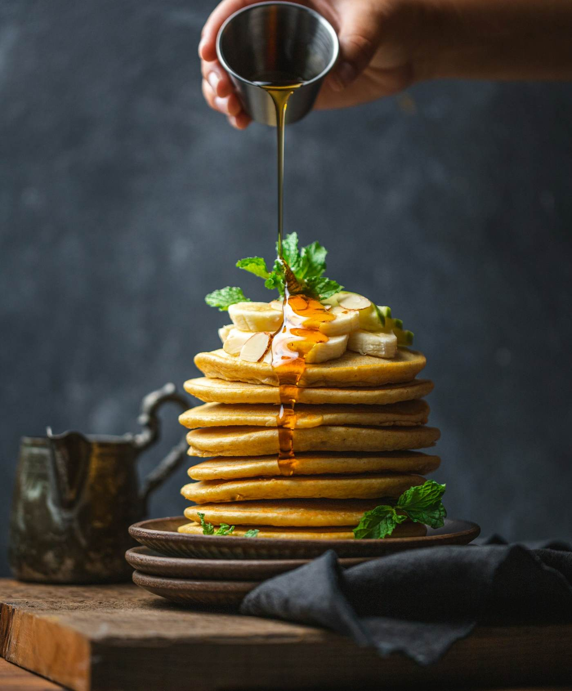

Menu
O nosso menu
Preços com IVA incluído. Pergunta-nos pelas opções sem glúten.

Brunch
Servido todos os dias até às 16h.
Panquecas da casa
Fruta da época, iogurte grego e xarope de ácer.
vegetariano9,50 €Ovos Benedict
Pão de fermentação lenta, presunto e molho holandês.
11 €Torrada de abacate
Abacate, ovo escalfado, sementes e lima.
vegetariano9 €
Bowls e saladas
Leves, coloridos e cheios de sabor.
Bowl de açaí
Açaí, granola da casa, banana e frutos vermelhos.
vegan8,50 €Salada Mesa Verde
Quinoa, legumes assados, feta e romã.
vegetariano10 €Bowl de salmão
Arroz, salmão marinado, pepino e edamame.
12,50 €
Café e bebidas
Café de especialidade e sumos naturais.
Flat white
Café de especialidade com leite vaporizado.
3 €Sumo natural
Laranja, cenoura e gengibre.
4 €Chai latte
Especiarias e leite à escolha.
3,80 €
Antes de marcar
Boas a saber
Reservas
Para grupos a partir de 4 pessoas.
Alergénios
Informação disponível no balcão e com a equipa.
Take-away
Todo o menu pode ser levado para casa.